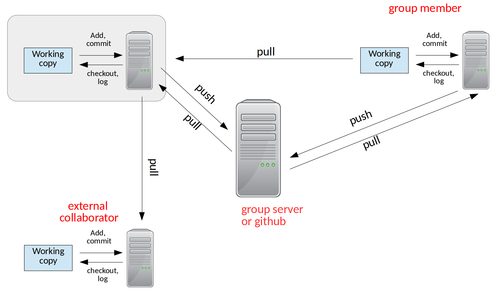

Git Remotes#
Bare Repository#
So far, we’ve just been using our git repo for ourselves.
Let’s look back at the figure illustrating ways we can share with distributed version control:
When multiple developers are working on the same code together, it is convenient to have a central repository that everyone can communicate with.
We use a special bare repository for this purpose. A bare repo
has all of the metadata for the project, but we don’t work directly in
it. This way we avoid the risk of having unsaved changed in the repo
that other people are using to synchronize with.
Let’s create a bare repo from our project2 project. From your home directory
(assuming that project2 is ~/project2/, we do:
git clone --bare project2
Now we see a new directory project2.git.
A First Example of Collaboration#
Let’s pretend we are a different user. Let’s make a directory for our pretend user and clone our project:
cd ~
mkdir newuser
cd newuser
git clone ~/project2.git
The clone command make a new git repo for our user called project2/
If we do a git log in it, we’ll see the whole history we had from
our earlier work.
Now, this repo knows where it was cloned from, through a concept called remotes. A remote is a repo (usually a bare repo) that we communicate with the share our changes (a push) of get changes from other users (a pull). We can see our remote by doing:
git remote -v
We’ll see something like:
origin /home/campus.stonybrook.edu/mzingale/project2.git (fetch)
origin /home/campus.stonybrook.edu/mzingale/project2.git (push)
Now’s let’s make a change
try it…
add the new user’s name to authors.txt and commit the change.
Now we can share our changes with our remote—the bare repo by doing a push.
git push
This pushes our changes back to the bare repo. Now go back to our original repo:
cd
cd project2
We need to add a remote to this original repo (if you do git remote it will show nothing). We’ll add a remote called origin.
git remote add origin ~/project2.git
Now, we can communicate with the bare repo and get the changes that the other user made by doing a pull:
git pull origin main
To make our life easier, we can tell git what remote branch to track:
git branch --set-upstream-to=origin/main main
then we can do just
git pull